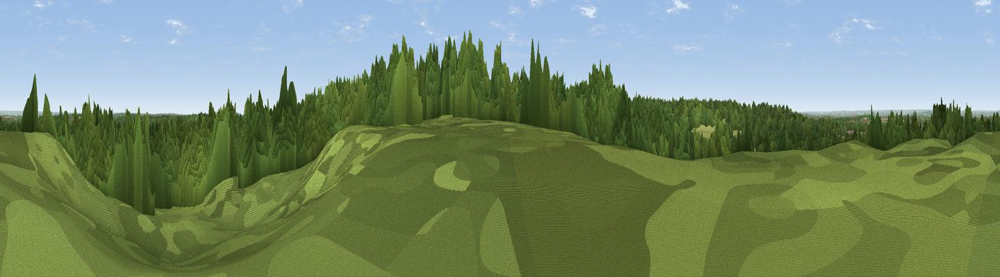

Gravel Hill
#45197 in England · top 74% of its area beats it · near Easthampstead · access?Where it is
The exact computed spot (SU 87605 65678). Click the marker for map links.
Public access: no public right of way or access land is recorded at this exact spot — it may be on private land. Computed from Natural England's CRoW access layer and OpenStreetMap rights of way — not the legal definitive map. Always verify locally.
The view, rendered

A 360° render of this exact spot computed from the terrain model, tree cover and land cover — summer colours, afternoon light, calibrated against photographs of famous viewpoints. Real trees, hedges and buildings will differ in detail.
The panorama
Grey silhouette: terrain skyline in each direction (720 bearings, Earth curvature and refraction included). Dashed green: skyline with trees (+15 m) and buildings (+8 m) as obstacles. Blue strip: how far the ground is visible on each bearing.
Where the view opens
Wedge length = distance to the farthest visible ground on that bearing (vegetation-aware). Rings at 10, 25 and 50 km.
What fills the view
76% woodland · 15% grassland · 8% built-up ·
Angular shares of the visible panorama (visual magnitude), not map area. Landscape diversity 0.32 (0–1 Shannon).
Key numbers
More beautiful places nearby
The staircase of upgrades: each row has a higher view potential than everything closer. Driving times are estimates from straight-line distance, calibrated against real road routing — check an actual route before setting out.
| Place | Direction | Drive | Score |
|---|---|---|---|
| Viewpoint near Bagshot | SE · 1 km | ~3 min | 29.8 |
| Viewpoint near Crowthorne | SW · 3 km | ~7 min | 32.5 |
| Viewpoint near Crowthorne | SW · 5 km | ~11 min | 38.3 |
| High Curley Hill | SE · 5 km | ~12 min | 38.5 |
| Windsor Castle | NE · 15 km | ~26 min | 39.8 |
| Viewpoint near Upper Hale | SSW · 16 km | ~28 min | 46.8 |
| Viewpoint near Wanborough | SSE · 19 km | ~32 min | 48.1 |
| Viewpoint near Compton | SSE · 19 km | ~33 min | 49.4 |
51.38340, -0.74253 · source: osm peak · position refined by local search. Computed location — check access rights before visiting.